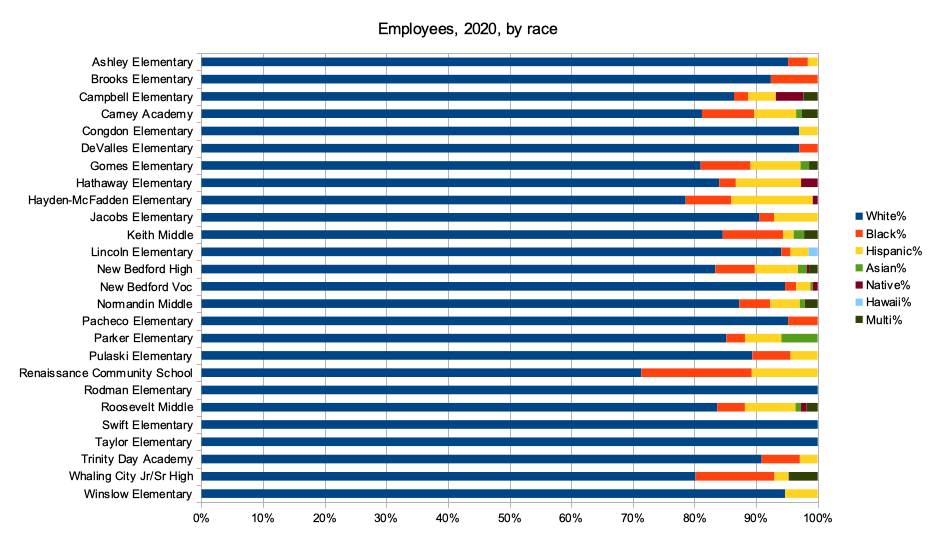
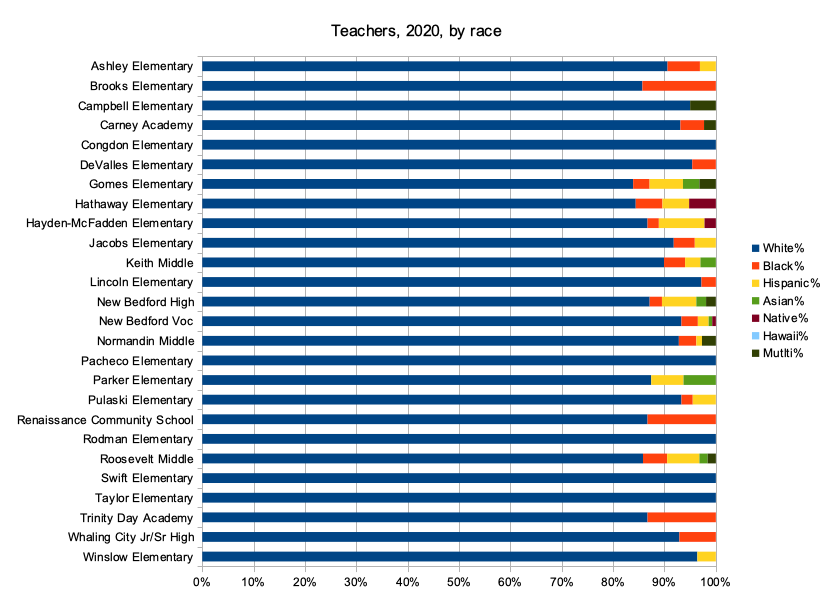
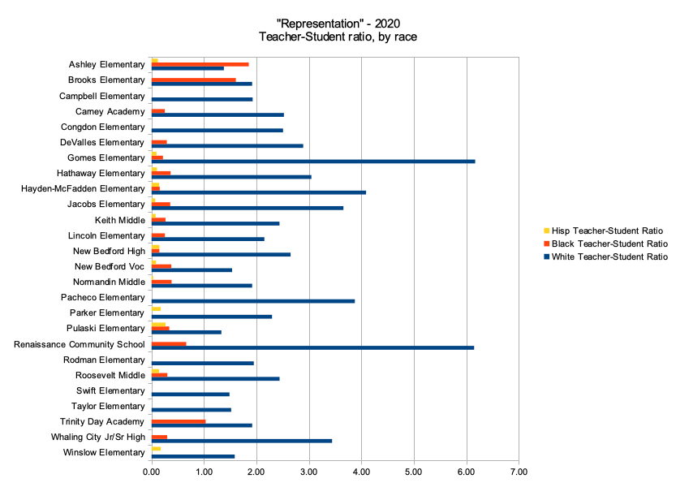

2020-09-27 08:00
In 2017, the Standard-Times ran an article, “New Bedford school officials pleased with job fair turnout,” which covered the School District’s 4th Annual job fair at Keith Middle School and described the District’s hiring process:
"The setup reflects the hiring process. Dr. Pia Durkin, the superintendent, has the legal mandate to hire personnel. First, Durkin has principals screen applicants and interview them. The one a principal recommends will be sent to the Human Capital office to be vetted and interviewed [by Heather Emsley]. Then the nominee is sent to the superintendent for approval…
As the job fair wound down, Deputy Superintendent Jason DeFalco was beaming. Once again the schools have acted early on the calendar “and are scooping up the talent,” he said."
The only problem is: NBPS seems to be scooping up mainly white talent.
Photos accompanying the article depicted hiring teams from each school — most of them white. Representatives of Congdon Elementary, which to this day still has an all-white teaching staff, sported t-shirts that read “Straight Outta Congdon.”
This was only months before current Superintendent Anderson’s arrival, but little appears to have changed in the three years since the Standard Times’ Job Fair article was written.
In a September meeting the NAACP New Bedford Branch held with Superintendent Anderson, Human Capital director Heather Emsley, and other members of the school administration, the Branch was informed that hiring is still left to individual principals. In describing how he intends to fix hiring inequities, Superintendent Anderson listed outreach and training programs intended to change the hearts and minds of prinicipals — but which leave NBPS hiring practices and processes unchanged.
To the NAACP New Bedford, this is worse than mere wishful thinking. The Superintendent doesn’t appear to be in full control of District-wide hiring.
In August we issued a report detailing systemwide racial inequities throughout the District. Upon discovering that the buck doesn’t stop at the Superintendent’s desk but at the desks of each of New Bedford’s 25 school principals, we took a second look at staffing by school.
A number of New Bedford schools are 100% white. Taylor, Swift, and Rodman have no employees of color. Zero. Winslow, Pacheco, Lincoln, DeValles, Congdon, and Ashley each have staffs that are more than 94% white.

When it comes to teaching, the inequities are even worse.
Taylor, Swift, Rodman, Pacheco, and Congdon teaching staffs are all 100% white. Teachers at Lincoln, Winslow, DeValles, and Campbell are all more than 95% white. Pulaski, Carney, Whaling City, Normandin, Jacobs, Ashley, and Keith Middle are all more than 90% white.

Students achieve more when teachers look and sound like them. We took teacher race percentages and compared them to student race percentages throughout the District. You can view the raw data here but the graph below shows (for example) that at Gomes Elementary and Renaissance Community schools the percentage of white teachers is six times that of white students. There are only three schools in the District where Black teacher percentages match or exceed Black student percentages. Nowhere in the District is there adequate hiring of Latino teachers in terms of representation.

What School Superintendent Anderson and Human Capital director Emsley are doing simply isn’t working — and it’s never going to work as long as no one office is in charge of fixing the problem.
“Hoping” to change the hearts and minds of 25 school principals in order to fix systemic racism within the District is at worst folly, and at best wishful thinking. The ultimate responsibility for fixing the District’s systemic racism lies with the Superintendent.
At our September meeting with Superintendent Anderson we suggested that he:
In discussions with Superintendent Anderson and director Emsley, we were told that the District has not had much success in recruiting from Historically Black Colleges and Universities (HBCUs). Some of the institutions named are not known for their education programs. This makes us wonder if the District has tried others that are? Outreach, like anything, is all about relationships. What sorts of relationships has the District established with local alumnae of HBCUs? Are they part of recruiting efforts?
We think the District can do better. Fixing persistent racial inequities in New Bedford Public Schools staffing is going to take resolve, creativity, community involvement, a solid plan, measurable milestones for progress, transparency, and much greater control by the Superintendent himself over his hiring process.